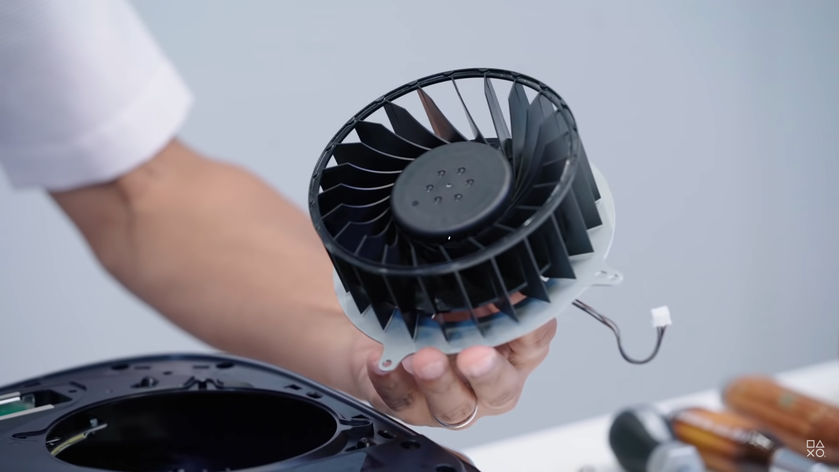

13.10.2020
Впечатляющей особенностью PlayStation 5, которая нравится далеко не всем, стал размер консоли. Приставка Sony нового поколения получилась даже больше PS4 Pro, так что будущим пользователям придется освободить дополнительное пространство на полке. По словам инженера PS5 Ясухиро Оотори, консоль могла бы быть меньше, если бы не кулер.
На прошлой неделе Sony разобрала PlayStation 5, показав, что консоль охлаждает большой 45-миллиметровый кулер. Как объяснил Ясухиро, благодаря своим размерам, вентилятор способен равномерно охлаждать обе стороны платы системы. Инженеры думали поставить два более мелких вентилятора, чтобы уменьшить и сам корпус, но тогда пришлось бы повысить и стоимость приставки.
Впрочем, инженеры не прогадали. Японские блогеры, которые уже успели опробовать новую консоль Sony, оценили эффективность и тишину системы охлаждения. Приставка работает тихо, при этом корпус не раскаляется и остается просто теплым даже в закрытом подвальном помещении.